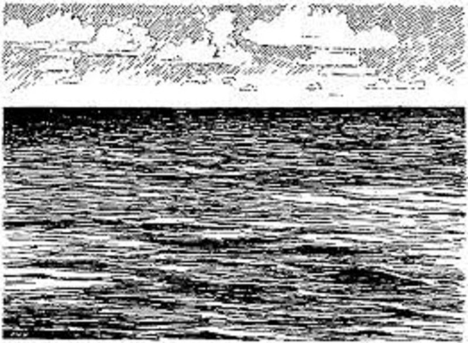

The Captain comes to you. "Have you made your mind up yet?" "About what, sir?" you reply. "If you trust me or not..." he replies.
You hesitate a moment before answering, but it seems to be a moment too long. The Captain orders one of the crewmen to lower the small boat used to go ashore. He then draws his sword. "I obviously made a mistake trusting you, and since you don't seem to trust me, I think it is best that you leave!" "But sir, we're in the middle of the ocean!" "Well, then I guess you'll be able to prove your navigation skills. Jump! Unless you would rather die!" With that, you leap overboard and swim over to the boat and begin to row, using the sun to hopefully navigate your way to an island you had previously seen on your charts.
